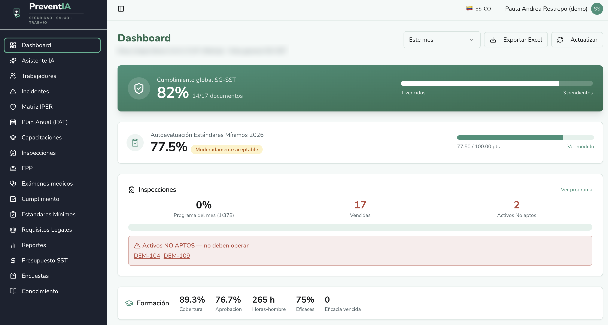
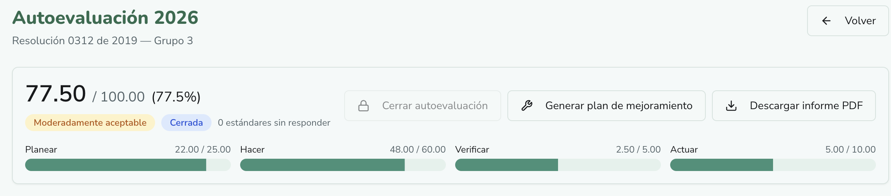
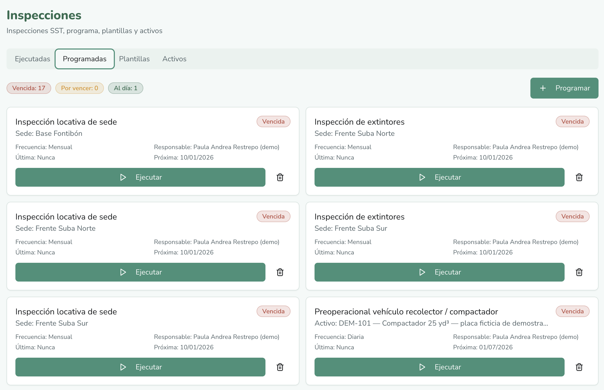
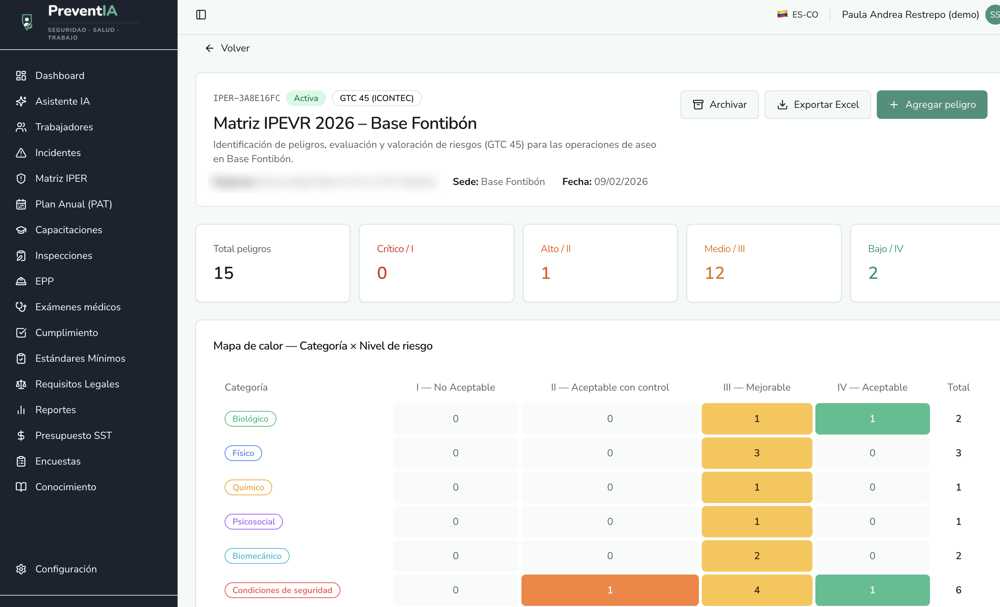
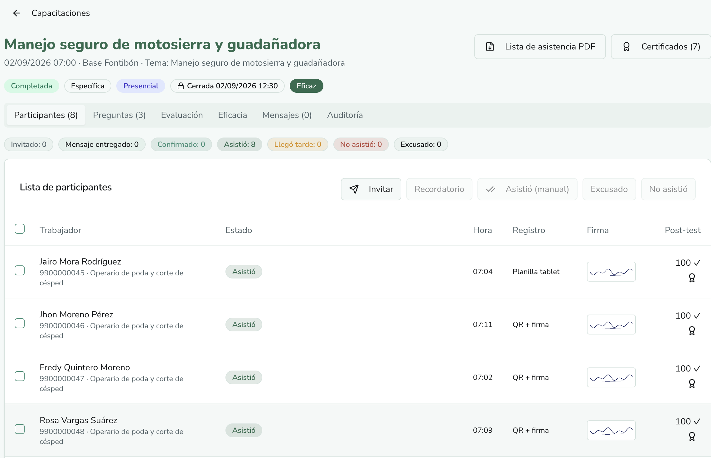
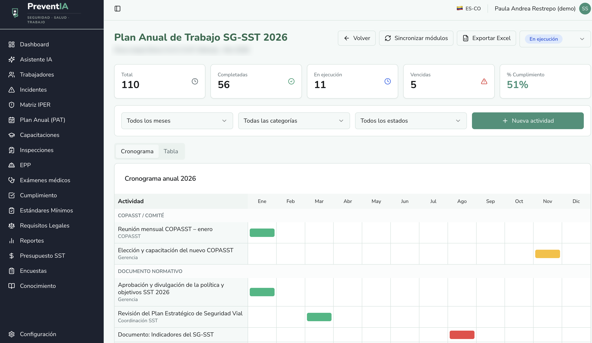

Evidencia que nadie encuentra
Certificados, exámenes y actas repartidos entre personas. Cuando llega la visita, nadie sabe dónde está cada soporte.
PreventIA reúne trabajadores, incidentes, capacitaciones, exámenes médicos, matriz legal y reportes en un solo lugar. La evidencia se mantiene viva durante todo el año, no solo cuando llega la auditoría.

Cuando todo está disperso, cumplir se vuelve un trámite de último minuto. Y cada hallazgo de auditoría cuesta más que el sistema.
Certificados, exámenes y actas repartidos entre personas. Cuando llega la visita, nadie sabe dónde está cada soporte.
Exámenes médicos, capacitaciones y documentos vencen sin alarma. Lo notas en la auditoría, no antes.
El informe gerencial y los formatos de la ARL toman semanas de trabajo que ya tienen los datos, pero en otro lugar.
Módulos conectados entre sí. Un incidente alimenta el reporte, una capacitación alimenta la ficha del trabajador.
Ficha completa con cargo, sede, nivel de riesgo, capacitaciones, EPP entregado, exámenes médicos e incidentes. Carga masiva y grupos.
Registro con fotos, análisis de causa raíz y acciones correctivas con evidencia. El borrador del FURAT sale en un clic.
Sesiones, participantes, evaluaciones con preguntas y certificados generados en lote.
Control por trabajador con fechas de vencimiento para que nada se pase sin aviso.
Documentos requeridos, auditorías con hallazgos tipificados y semáforo por categoría del ciclo de mejora continua.
Requisitos precargados para tu país, con plantilla e importación para tus propios requisitos.
Planificado frente a ejecutado por año, categoría e ítem. El dato que necesita quien aprueba el gasto.
Autoevaluación anual con los estándares de la Resolución 0312 de 2019, calificación por ciclo PHVA y plan de mejoramiento generado desde el PAT.
Programa con frecuencias y responsables, ejecución con fotos por ítem, activos y plantillas. Funciona también sin conexión.
Identificación de peligros, evaluación y valoración de riesgos con metodología GTC 45 y mapa de calor por categoría y nivel.
Cronograma por mes y categoría, con avance y vencimientos. Las actividades se conectan con los estándares que lo requieren.
Responde preguntas sobre normativa colombiana y sobre la base de conocimiento de tu empresa.
Reportes estáticos, constructor dinámico e informe gerencial de 12 secciones con conclusiones generadas por IA.
Cuando ocurre un accidente de trabajo, el reporte a la ARL tiene plazo. PreventIA ya tiene los datos del trabajador y del incidente, así que el borrador sale listo para revisar.
El checklist de la 0312 se califica solo. Cada estándar se marca como cumple, no cumple o no aplica según el grupo de tu empresa, y el puntaje se recalcula al instante.

Las inspecciones se programan con responsables y vencimientos. La matriz de riesgos y el plan anual quedan conectados con lo que pasa en campo.




Como la evidencia se registra durante el año, el informe no se arma de cero. Semáforo por categoría, indicadores y conclusiones en un documento para presentar.
Etiquetas, formatos y entidades de cada país, para que no tengas que adaptar nada a mano.
Una demo de 20 minutos, enfocada en tus trabajadores, tus riesgos y tus próximos vencimientos.